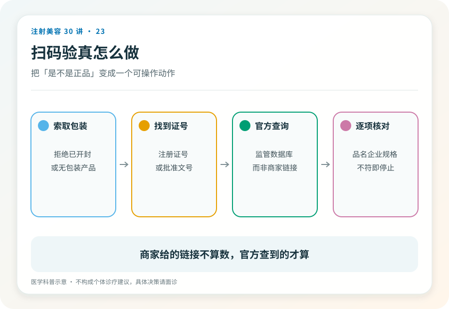

消费者操作清单
“道理都懂，但真躺在床上了，我到底该做哪几个动作？”
这篇只回答这个问题。五个动作，全程两分钟，任何一步被拒绝或含糊带过，就是离开的信号。

01先解决心理障碍
核验最大的敌人不是造假技术，是你的不好意思，怕尴尬、怕“显得不信任医生”、怕破坏气氛。
换个角度想，正规机构对这五个动作习以为常。产品信息本来就该展示，当面拆封本来就是规范，你不是第一个查的人，也不会是最后一个。只有心虚的场所才会觉得被冒犯。对方的反应本身就是核验结果的一部分。

02五个动作
一看注册证。 开口要求，“请出示这支产品的注册信息。”正规机构能直接拿出来。看注册产品名。它应该和你面诊时谈的产品对得上（第 02 篇的翻译链在这里兑现）。
二对包装。 包装上的产品名称、生产厂家，与注册证信息一致；包装完整、标签清晰、在效期内。汉字都不认识几个的“纯进口包装”且拿不出中文注册信息的，直接红牌（第 03 篇说过，在中国合法注射的前提是在中国注册）。
三查批号。 用手机在药监局官网数据查询入口，按产品名或注册证编号当场检索比对。两分钟里最硬的一步。它不依赖对方给你看什么，只依赖公开数据库。
四验拆封。 要求当面拆封全新包装。预开封的、分装的、“上一位客人没用完的”，一律拒绝。这是最常见的掉包与稀释场景。这个要求没有讨价还价空间。
五留记录。 拍照，产品信息页、批号、注册证。这就是第 09、17 篇反复强调的注射档案的第一页。未来任何就医、评估、维权，都从这几张照片开始。
03两个边界要讲清楚
核验通过 ≠ 绝对安全。五步验证的是产品合法性；操作风险（第 14 篇）、方案合理性（第 13 篇）是另外两条防线。产品是真的，不代表方案是对的，方案的核验在面诊（第 25 篇）。
不训练肉眼鉴宝。本文刻意不教“如何分辨高仿包装”，真假鉴别交给注册查询和当面拆封这两个制度动作，而不是你的眼力。把鉴别游戏化，反而会给你虚假的信心。
04被拒绝时的标准动作
任何一步遭遇拒绝、拖延、转移话题（“我们是大机构不用查这些”“系统里有你放心”），标准动作只有一个。起身离开。
不需要争论，不需要给理由，不需要给对方“解释的机会”；解释的机会在你提问时已经给过了。择期项目的全部谈判筹码就在于，你永远可以不做。
05证据边界
药监局查询入口的具体页面与操作路径以官网当前版本为准，本文不固化具体界面描述。五步清单是消费者自保动作，不替代监管与机构的质控责任。
06延伸阅读
你不需要成为专家，只需要在两分钟里做完五个动作；专业的门槛已经由监管体系替你建好了，你只要走到门口验一下票。
内容边界本文用于公众教育，不构成个体诊疗建议；具体适应证、风险与处置请由合格医生面诊判断。